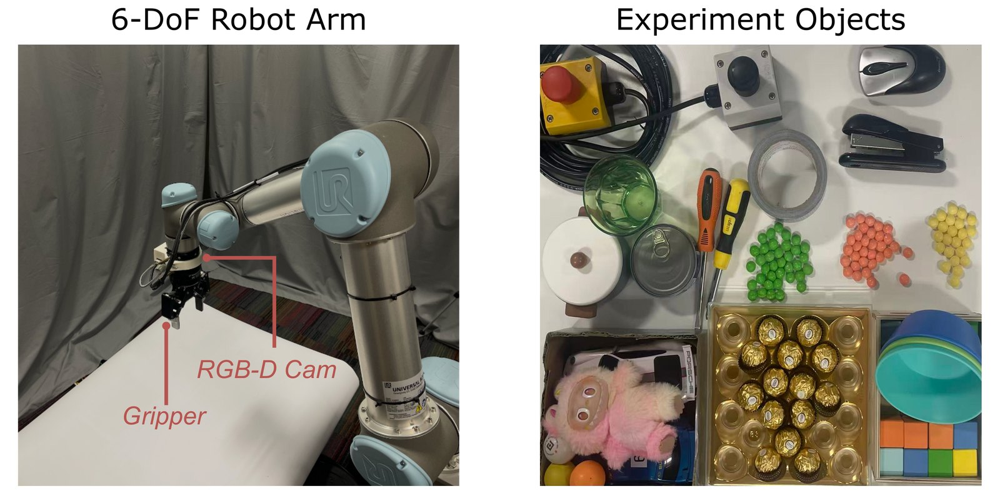

TRAIL: Learning Task-Relevant Latent Residuals for Robot Manipulation
Task-Relevant residuals as an Action prior for robot manIpuLation
Anonymous submission
TL;DR TRAIL pre-trains only on action-free human videos, keeps its future predictor after pre-training, and hands the policy the predicted change Δz rather than a static scene embedding. Every clip on this page is a closed-loop TRAIL policy; speeds are labelled on each video.
Real-robot rollouts
One language-conditioned policy on a physical UR5 with a wrist-mounted RGB camera, trained on 200 demonstrations. Each task shows two evaluation trials; the counter gives TRAIL's successes over all 15 trials of that task.

Seen objects
2Packing blocks
▶▶ 1.75×3Packing objects
▶▶ 1.75×Held-out objects objects never seen during training
4Packing unseen blocks
▶▶ 1.75×5Packing unseen objects
▶▶ 1.75×Unseen tasks tasks never demonstrated during training
6Pushing piles
▶▶ 1.75×7Pressing buttons
▶▶ 1.75×Simulation rollouts
Franka Kitchen left and right camera views of the same task
▶▶ 1×Left
Right
Left
Right
Left
Right
Left
Right
Left
Right
Meta-World MT10 one policy for all ten tasks
▶▶ 0.5×Head-to-head on the same initial states Meta-World Push and Pick-Place
▶▶ 0.5×TRAIL, DINOv3 (strongest baseline on both tasks) and R3M (strongest baseline on MT10 average) replay the same evaluation episodes (seed 999999). Shown: the first two episodes where TRAIL succeeds and both baselines fail, and the first where TRAIL fails but a baseline succeeds. The strips show every episode.
All 50 evaluation episodes (filled = success, outlined = shown above)
TRAIL35/50
DINOv319/50
R3M16/50
All 50 evaluation episodes (filled = success, outlined = shown above)
TRAIL20/50
DINOv39/50
R3M1/50
Results at a glance
Average success rate against the strongest baseline in each setting. Full tables are in the paper.
Physical UR5
90%
vs 79% LaVA-Man
7 tasks · 15 trials each · 105 trials per method
Meta-World MT10
78.2%
vs 70.0% R3M
10 tasks · 3 seeds · 50 episodes per task and seed
Franka Kitchen
81.2%
vs 79.2% LaVA-Man
5 tasks · 2 viewpoints · 3 seeds
Method in one figure